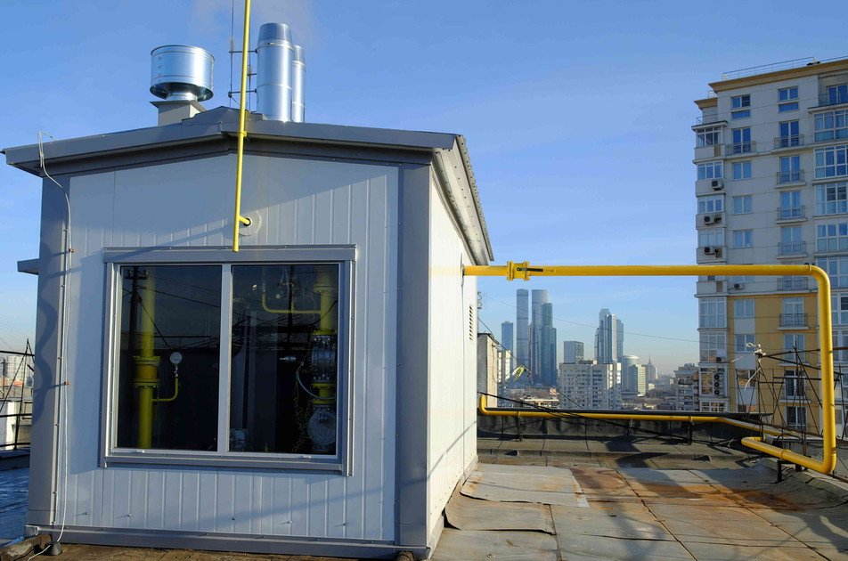

Шаг 1. Тип предприятия
Выберите объект, который вам ближе по опыту или интересу. Это определит базовую категорию НВОС и объем документации.
Шаг 2. Технология и водоотведение
Выберите тип технологического процесса и способ сброса сточных вод. Это определит необходимость проектов НДВ/НДС и договоров водопользования.
💡
Здесь вы указываете, как работает производство и куда уходят стоки: в водный объект, в замкнутый цикл или в городскую канализацию.
Шаг 3. Отходы и переработка
Укажите состав отходов и наличие опасных веществ. Это повлияет на лицензии, паспорта отходов и договоры с регоператором.
♻️
Здесь вы определяете, образуются ли у вас отходы I-II классов, идет ли переработка на месте или вывоз на полигон.
Шаг 4. Расположение объекта
Выберите окружение, в котором работает предприятие. Это влияет на требования к СЗЗ, договоры водопользования и риски жалоб.
Разбор вашего предприятия

Это учебный пример. В реальной работе состав документов и обязанности вы уточняете по фактическим данным по объекту.